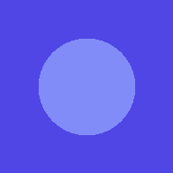

To-Doooon!期限管理とGoogleカレンダー連携を備えた、シンプルなタスク管理ツール。 スマホのホーム画面に追加すれば、アプリのように使えます。
やることを入力するだけ。完了チェックや削除もワンクリックで、迷わず使えます。
タスクごとに期限日を設定可能。期限切れのタスクは赤色で自動的にハイライトされます。
「すべて」「未完了」「完了済み」でタスクを切り替えて表示できます。
ボタン一つでタスクをGoogleカレンダーの予定として追加できます。
スマホのホーム画面に追加すれば、アプリのように起動できます。オフラインでも動作します。
入力したタスクはお使いの端末のブラウザ内に保存されます。次回アクセス時も続きから使えます。
やることを入力欄に書いて、必要なら期限日も選びます。
リストにタスクが追加されます。
終わったタスクはチェックを入れるだけで完了扱いになります。
📅ボタンでGoogleカレンダーに予定として追加できます。
※ To-Doooon!はブラウザ内(localStorage)にデータを保存する個人向けTodoアプリです。端末やブラウザを変えるとデータは引き継がれません。